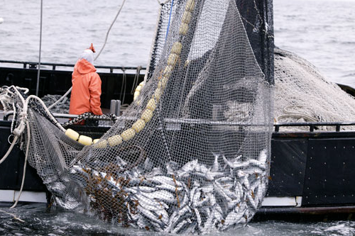
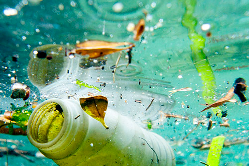

The temperature, chemistry, currents and life of the oceans is crucial to Earth.
More than 3 billion people rely on marine and costal biodiversity for their livelihoods, but 30% of the world's fish stocks are
overexploited, meaning that sustainable yields cannot be produced.
Oceans absorb 30% of carbon dioxide produced by humans yet are damanged by a 26% rise in ocean acidification, where the ocean's pH
decreases.
Marine pollution is rising, with 13,000 pieces of litter every square kilometre of ocean.
Conservation and international laws will help to protect our oceans.


Life Below Water Facts
• 75% of Earth is covered by oceans
• 200,000 species are identified in the oceans, but this may be millions
• 3 billion people and counting depend on marine and costal biodiversity to live